Curiosities
17 Essex, New York
May 13-21, 2016
Curated by Dillon Petito, Valentina Van de Weghe, Chaeri Lee, Grace Gurley Linderholm, and Hannah Strauss.
Cabinets of Curiosities were small, private rooms in early modern European homes that displayed collections of exoticized, pseudoscientific objects, fossils, (both real and fabricated) specimens, and artworks. These cabinets served as instruments for conveying one's intellectual control over the world by exhibiting their own preservation and collection of its objects. Often maximalist in their display—with objects covering the walls and ceilings—these modern world microcosms became subjects of both wonder and genuine scientific, geological, and ethnographic study. These cabinets were precursors to Western museums and exhibition making.
Curiosities takes an interest in the memory and ontology of objects, engaging in the process of collecting while putting into question its anthropocentric traditions. The included artists deploy methodologies that both utilize and critique practices of preserving, fabricating, and displaying objects of curiosity. The displayed art-objects experiment with the ways in which institutions collect, people collect, and objects collect. Out of practices such as fossilizing one’s own body or using films to collect dust and humidity from the air emerge the sculptural forms that crowd the small, second story room.
Featuring artists Jake Borndal, Ala Dehghan, Susannah Liguori, Andrea McGinty, Katelynn Mills, Leyna Rowan, and Emma Strebel.
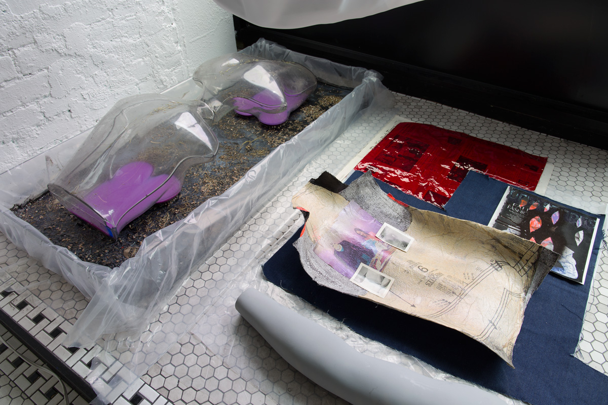 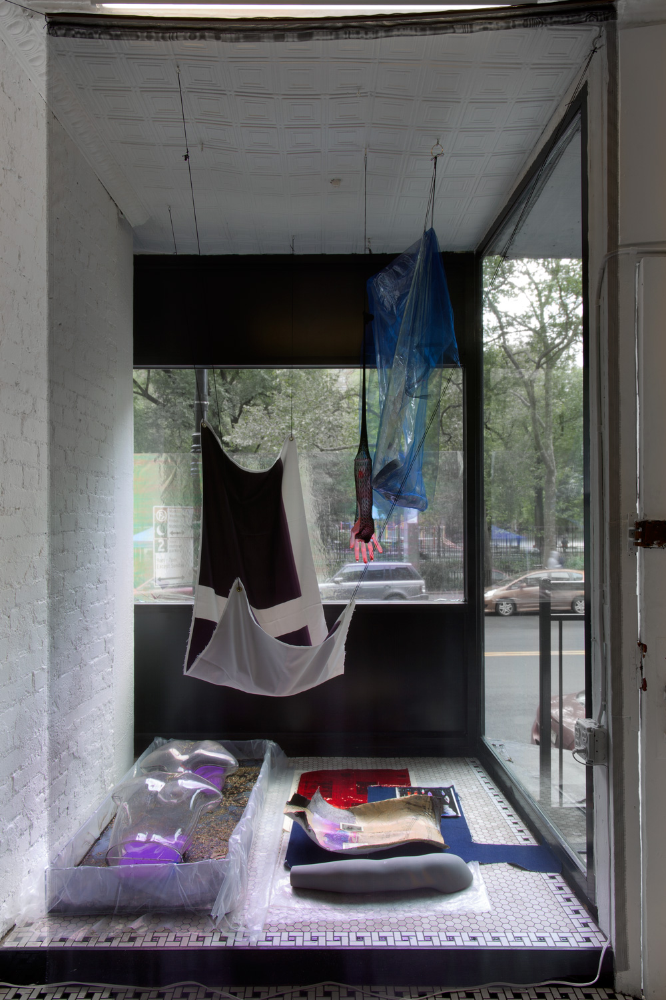 Ala Dehghan 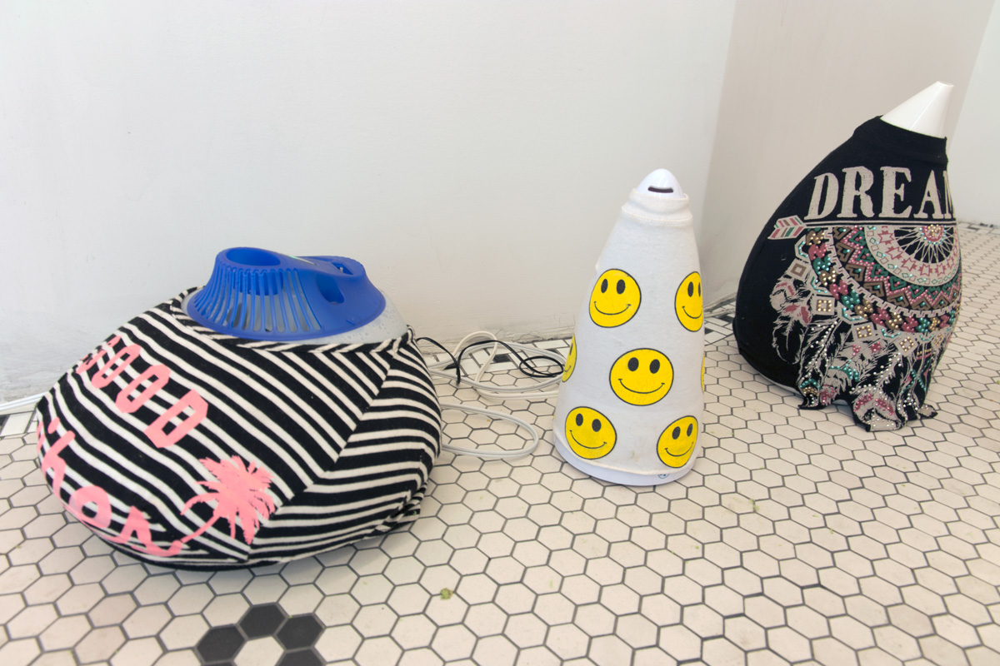 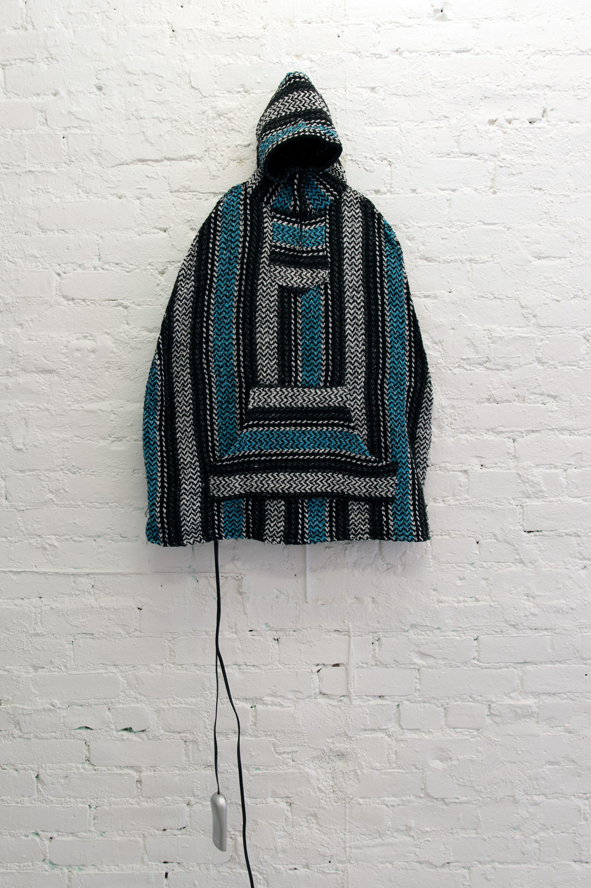 Andrea McGinty 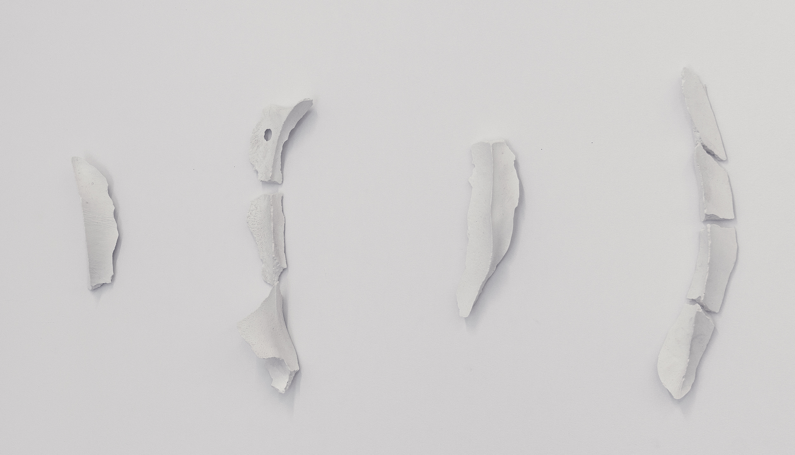 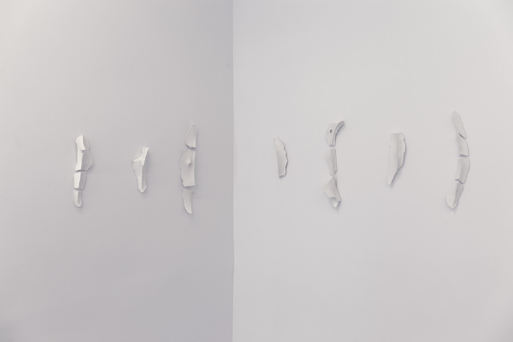 Emma Strebel 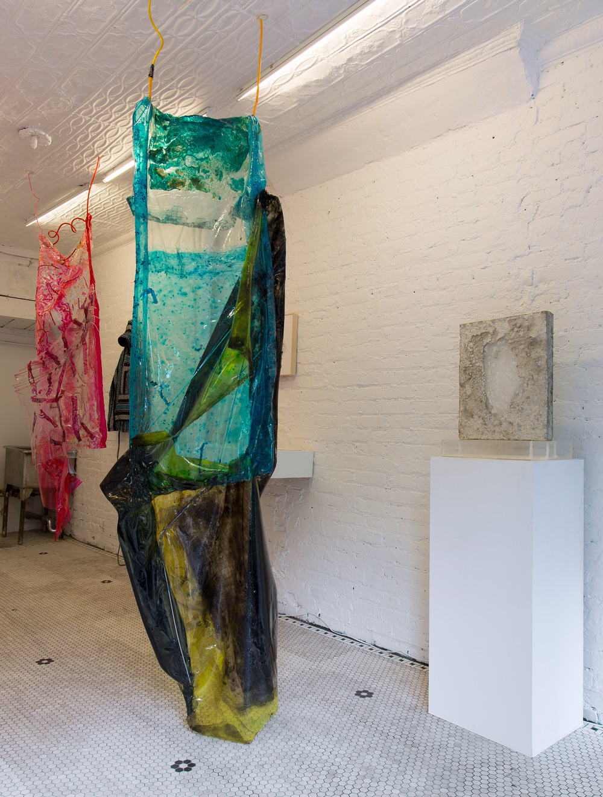 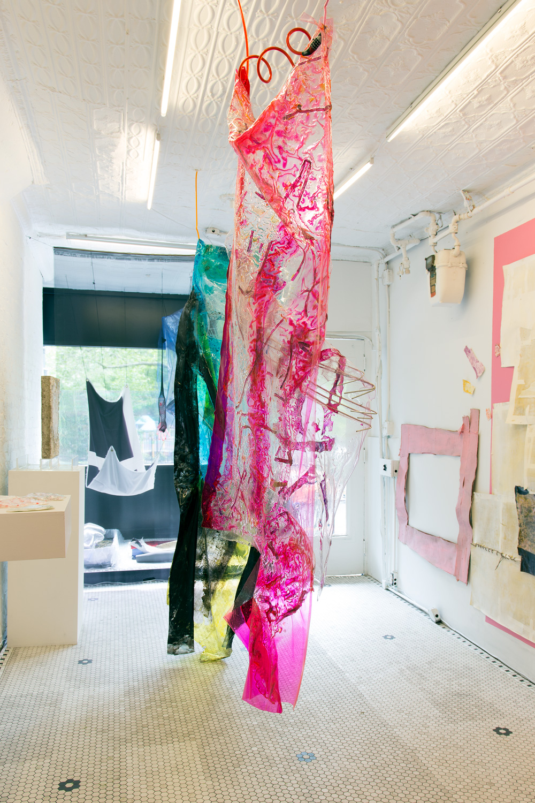 Jake Borndal 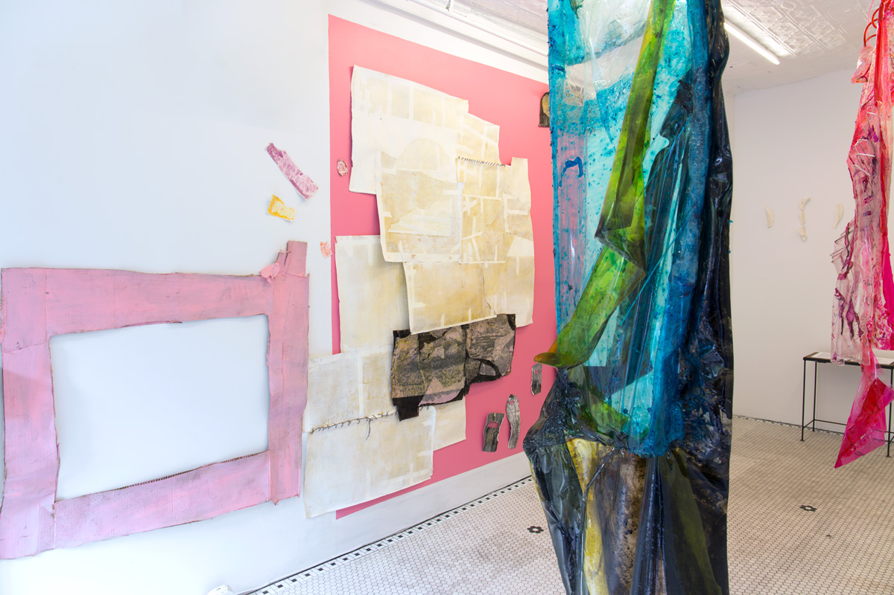 Katelynn Mills 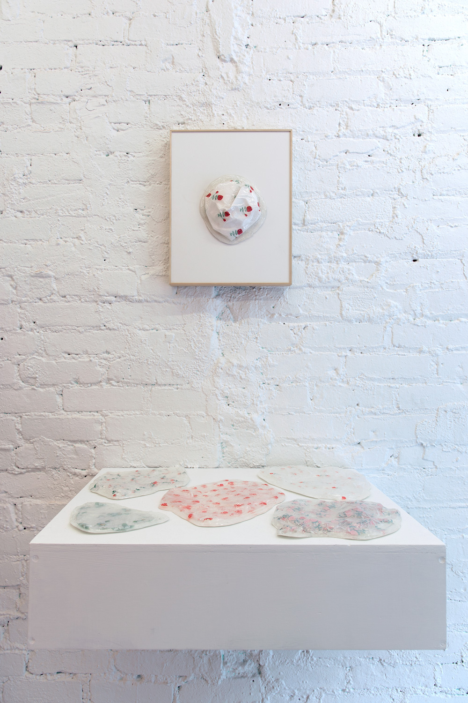 Susannah Liguori 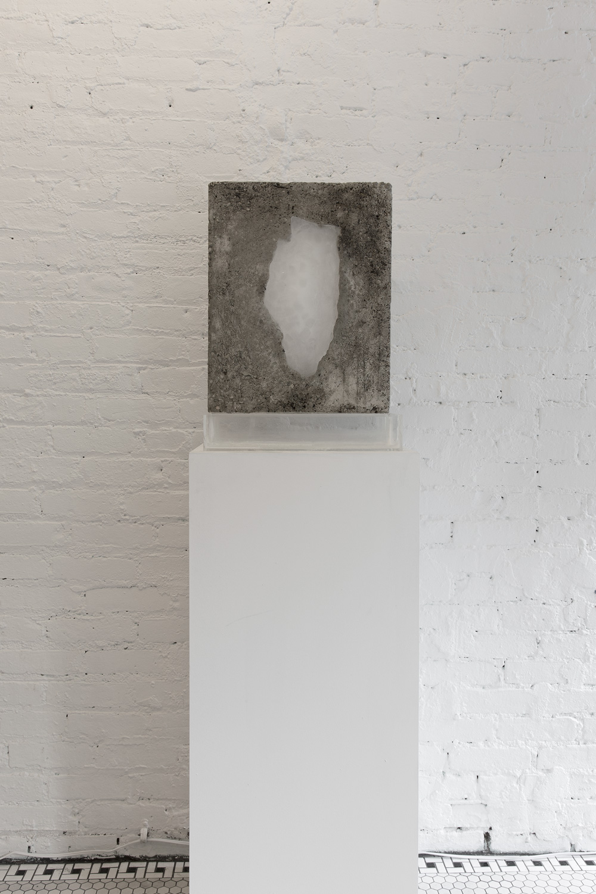
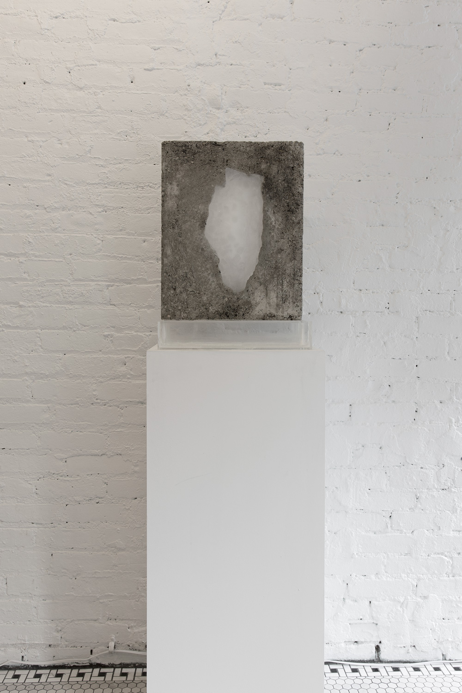
Leyna Rowan
Jake Borndal – Puddled hide a pickled hue new flesh farms great gorgeous goo on augured tempests follied-thru, as sesshin oracles are wont to do-For-seeing and for-telling, they temp till five then conduct themselves undignified, like cosmic plaque but finely scribed, a sequel when the rest were inside. The feeling will prolong its stay, unlock two chains and float away.
Ala Dehghan's practice is a complex process of collage, assemblage, and montage. She collects and archives a constellation of images and information. Each work grows during the process of subtraction, removal, lamination, separation and displacement, and combined of the built and the found, the organic matters and the synthetic mass-produced materials, the transparent and the opaque. They are layered, filtered and stacked to create a new lens to perceive the psychological, political and social undercurrents. She plays with the idea of perception in relation to the body, how new subjectivities arise as you orient and re-orient your body in relation to the work. Ala has exhibited solo projects at Otto Zoo Gallery, Milano; Kalfayan Galleries, Athens; and Thomas Erben Gallery, New York. Her work has been reviewed in Frieze Magazine, Art F City, The Drawing Center and ATP Diary among others. She received her MFA from Yale University, and lives and works in Brooklyn.
Susannah Liguori has always been interested in the little bits: the things we choose to preserve and the things we choose to get rid of, both physical and non physical. She is interested in the point at which these things become something greater than they actually are. We all have these bits. Some people ignore the bits to avoid clutter or perhaps function in a more efficient human manner. Some choose to save the bits, which can pile up creating a mass of bits within space or mind. The bits can be small, like a question unable to be answered by Google, existing in limbo in the search bar. They can be the functionlessness of a mitten missing its pair or a piece of wrapping paper removed from its gift. The line between a craft, a domestic functioning object, a piece of trash or a work of “art” is a line she tries to dance alongside.
Andrea McGinty is an artist, writer, and curator living and working in Queens, NY. Recent solo exhibitions include “Spiritual Awakening Tailgate Party” at High Tide Gallery, Philadelphia, PA, and Life’s a Beach!!! with Hotel-Art.us, New York, NY. She’s been included in exhibitions at the Guggenheim Museum, Abrons Arts Center, Louis B. James, Beverly’s, New Release (New York, NY), Outlet, Present Company (Brooklyn, NY), Living Art Museum (Iceland), Periscope (Austria), and LaAgencia (Colombia), amongst others. She is the author of God, I Don't Even Know Your Name (2015), an erotic novella published by Badlands Unlimited, and has been featured in publications such as Mousse Magazine, Modern Painters, Blouin ArtInfo, W Magazine, The Paris Review, and T Magazine.
Katelynn Mills takes a phenomenological approach to understanding life and its materials, attempting to use painting and materials to understand what Being is. She has always been riddled by conflict and ambivalence; likewise, her work always starts from indeterminacy and action upon possibility. While pursuing her BA in Santa Cruz, CA, Katelynn worked with former President of the American Society of Cybernetics and longtime painter Frank Galuszka, and is working on publishing their writing on the cybernetics of painting. She is a recent MFA graduate of the New York Studio School.
Leyna Rowan is a California-born visual artist, who has studied film and photography at New York University’s Tisch School of the Arts. She focuses on transient things, documentation, and material surfaces. She is currently based in New York.
Emma Strebel works with light, shadows, ice, balance and edges. Emma's investigation of these materials demands time and stillness as she captures the sensation of subtle change over long periods of time. She aims to open the door to an awareness that meditates on impermanence. In an age where technology perpetually forces us to filter, rather than focus, Emma's work challenges our desire for immediate gratification and rewards patience and reflection with a simple moment. Emma has previously shown her art at The Outer Room, Brooklyn; The Alchemical Studios, New York; and The Commons Gallery at NYU. She recently exhibited a solo installation at Broadway Windows, New York; and The Cube, Abu Dhabi.